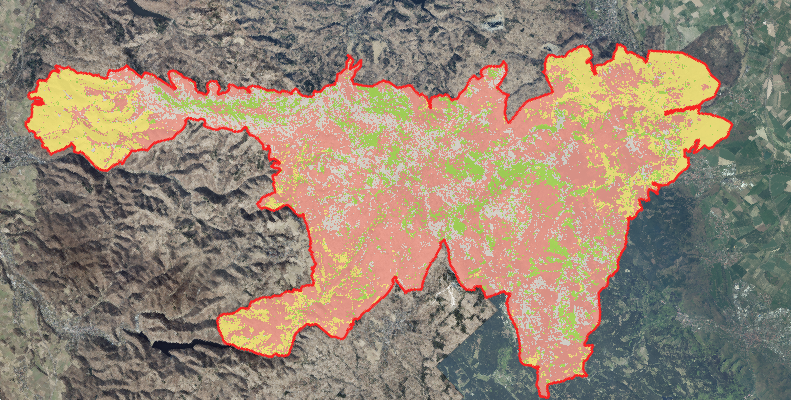
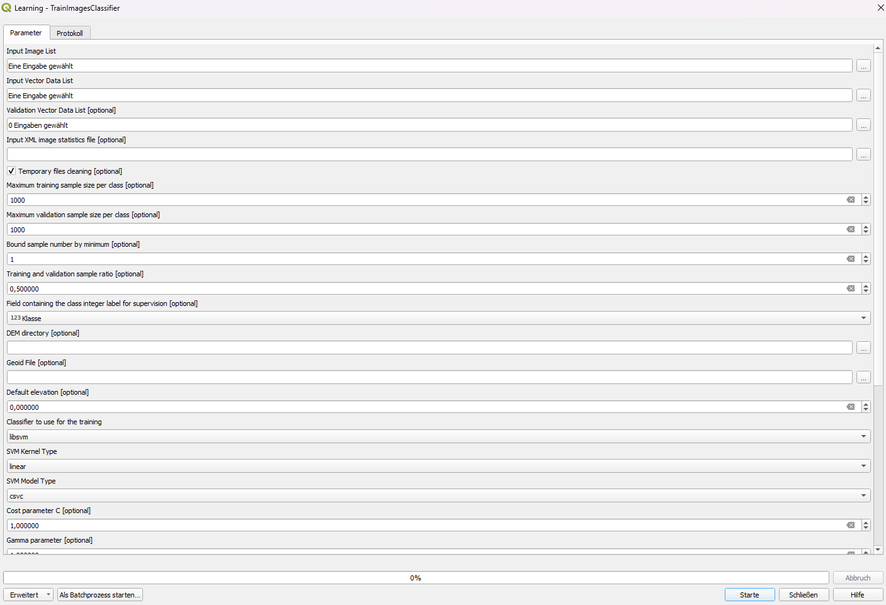

7 Lerneinheit 07: Waldtypenklassifikation im Nationalpark Harz

7.1 Lernziele & Aufgabenstellung
In dieser Übung soll für den Nationalpark Harz eine einfache Waldtypenkarte für das Jahr 2025 erstellt werden. Dazu werden aktuelle Satellitenbilder des Satellitensystems Sentinel-2 automatisiert mit einem überwachten Klassifikationsverfahren klassifiziert.
Die Übung dient der Demonstration der grundlegenden Prinzipien der überwachten Bildklassifikation. Es ist nicht das Ziel eine genaue Waldtypenkarte für spätere Auswertungen zu erstellen. Dies würde ein deutlich höherer Aufwand erfordern, besonders bei der Auswahl von Trainingsgebieten, und somit den zeitlichen Rahmen dieser Übung sprengen.
Lernziele
Die Studierenden sollen:
- Trainingsdaten für Bildklassifikationen anzulegen
- Maschinelle Lernverfahren zum Erstellen von Klassifikationsmodellen zu nutzen
- Mithilfe von trainierten Klassifikationsmodellen Satellitenbilder klassifizieren um einfache Landbedeckungskarten zu erstellen.
Aufgaben
- Raster- und Vektordaten importieren
- Ergänzung von Trainingsdaten durch visuelle Interpretation von Ortholuftbildern
- Trainings eines RandomForest Klassifikationsmodells
- Klassifikation eines S2-Satellitenbilds zur Erstellung einer Waldtypenkarte
7.2 Aufgabe 0: Anlegen eine neuen QGIS-Projektes
Folgen sie der Anleitung aus LE01 Kapitel 1.3 um eine neue Ordnerstruktur und ein neues QGIS-Projekt für LE07 anzulegen. In der Übung bietet es sich an den Ordner “daten” weiter in die Unterordner “vektor” und “raster” zu unterteilen.
7.3 Aufgabe 01: Download und Import der Geodaten
7.3.1 Rasterdaten
7.3.1.1 Satellitenbilder
In dieser Übung sollen aktuelle Sentinel-2 Satellitenbilder für die Klassifikation verwendet werden. In LE04 Kapitel 4 haben wir bereits eine Satellitenbildkarte angelegt und die entsprechenden Sententinel-2 Bilder beschafft und vorbereitet. Kopieren Sie sich das Bild NP_Harz_2025_06_12.tif aus der Übung LE04 in den “daten” Ordner der akuellen Übung (LE07). Sollten sie keinen Zugriff auf dieses Bild mehr haben, können sie es sich alternativ hier herunterladen:
https://cloud.hawk.de/index.php/s/2Hmncq99dxSoE3W
Bei dem Bild handelt es sich um ein Sentine-2 Satellitenbild vom 12.06.2025 mit folgenden vier Bändern:
- Band 1 (blau)
- Band 2 (grün)
- Band 3 (rot)
- Band 4 (Nahes Infrarot, NIR)
Importieren sie die Satellitenbild in ihr QGIS-Projekt und erzeugen sie eine CIR-Falschfarbendarstellung (siehe auch LE02 Kapitel 2.5). Achten sie darauf “0” als Nullwert zu setzen. Führen sie anschließend eine Kontraststreckung mit einer zweifachen mittleren Standardabweichung durch.
7.3.1.2 Luftbilder
Für die Erstellung der Trainingsdaten sollen Luftbilder mit einer höheren räumlichen Auflösung genutzt werden. Da der Nationalpark Harz in zwei Bundesländern liegt müssen von beiden Bundesländern entsprechende DOP-Bilder als WMS eingebunden werden (siehe dazu auch LE03 Kapitel 3.4). Nutzen sie hier für folgende Links:
Sachsen-Anhalt:
DOP-WMS:
https://www.geodatenportal.sachsen-anhalt.de/wss/service/ST_LVermGeo_DOP_WMS_OpenData/guest?
DOP-Aktualität:
https://www.geodatenportal.sachsen-anhalt.de/wss/service/ST_LVermGeo_DOP_WMS_Kacheluebersicht/guest?
Niedersachsen:
DOP:
https://opendata.lgln.niedersachsen.de/doorman/noauth/dop_wms>
Fragen:
- Welche räumliche Auflösung hat das Satellitenbild?
- Welche radiometrische Auflösung hat das Satellitenbild?
- Wann wurden das Satellitenbild und wann die Luftbilder in Sachsen-Anhalt und Niedersachsen aufgenommen?
7.3.2 Vektordaten
Für die Übung werden zwei Vektordatensätze benötigt:
1.) Grenzen des Nationalparkharz die sie hier herunterladen können:
https://cloud.hawk.de/index.php/s/Hs52DFGtPnfKzyN
2.) Vorbereiteter Referenzdatensatz mit Polygonen der verschiedenen Waldtypen
https://cloud.hawk.de/index.php/s/ox2CsrEDHNjiiyF
Für die Darstellung der unterschiedlichen Waldtypen wurde bereits eine QGIS-Stylefile angelegt das sie hier herunterladen können:
https://cloud.hawk.de/index.php/s/QZiSkR5Sd9Q5SdH
Importieren sie die Vektordaten und passen sie die Darstellung der Referenzdaten entsprechend des vorgegeben Stils an.
7.4 Aufgabe 02: Ergänzung der Referenzdaten
7.4.1 Klassifikationschlüssel
Der Klassifikationsschlüssel legt fest, welche Landbedeckungs-/Landnutzungsklassen in der thematischen Karte erfasst werden sollen. Er enthält üblicherweise auch eine detaillierte Beschreibung wie die einzelnen Klassen definiert sind und wie sie erfasst werden sollen. Für diese Übung soll eine einfache Unterscheidung von drei Waldtypen und einer Hintergrundklasse ausreichend sein:
| Name | Erläuterung | ID |
|---|---|---|
| Nadelholz | Lebende, vitale Nadelgehölze | 1 |
| stehendes Totholz | Stehende tote Bäume | 2 |
| Laubholz | Lebende, vitale Laubgehölze | 3 |
| Freiflächen | Flächen ohne stehende Bäume | 4 |
7.4.2 Trainingsdaten ergänzen
Um eine überwachte Bildklassifikation durchführen zu können werden Referenzdaten benötigt. Die Referenzdaten dienen zur Parametrisierung des Klassifkationsmodells, bzw. bei nicht-parametrischen Verfahren zum Trainieren des Klassifikationsmodells. Die Anlage der Referenzdaten hat dabei eine enorme Bedeutung für die Qualität der Klassifizierung und der daraus resultierenden thematischen Karte. Es ist daher wichtig eine ausreichende Anzahl qualitativ hochwertiger Referenzdaten vorzubereiten. Für die Übung heute möchten wir uns aus Zeitgründen jedoch auf 25 Flächen pro Klasse beschränken. Die Auswahl und Anlage der Gebiete erfolgt dabei rein subjektiv -visuell.
Der Layer Referenzdaten im Geopackage uebung07.gpkg enthält bereits für alle vier Klassen des Klassifikationsschlüssels jeweils 20 Polygone als Trainingsdaten. Ergänzen sie den Datensatz um jeweils fünf weitere typische Beispiele der Klassen. Nutzen sie dafür die das Sentinel-2 Bild und die Luftbilder aus den beiden Bundesländern. Achten sie dabei auf folgende Aspekte:
die Trainingsdaten sollten verteilt über das ganze Gebiet des NP liegen
als Trainingsdaten sollten Gebiete gewählt werden die eindeutige der jeweiligen Klasse zugeordnet werden können.
die Trainingsdaten sollten die Variabillität der Spektralbereiche der jeweiligen Klassen möglichst abdecken
7.5 Aufgabe 03: Training eines Klassifikationsmodells
Im ersten Schritt müssen wir das Klassifikationsmodell mithilfe der Trainingsdaten „anlernen“. OTB stellt dazu die Funktion „TrainImageClassifier“ zur Verfügung, die wir in der Werkzeugkiste der Verarbeitungsfunktionen über die Suche finden können. In dieser Funktion setzen wir die folgenden Optionen:
Input Image List: Hier geben wir unser Sentinel2-Bild des NP-Harz an
Input Vector Data: Hier wählen wir das geopackage mit den Referenzdaten.
Field containing the class integer label for supervision: Hier wählen wir das Feld “Klasse” aus.
Classifier to use for the training: OTB bietet sehr viele Klassifikationsverfahren an, die alle mit dieser Funktion trainiert werden können. Für die Übung wählen wir „rf“ für „Random Forests“.
Output model: Hier geben wir an wo das trainierte Klassifikationsmodell gespeichert werden soll. Wir wählen „rf_harz_2025.modell“ im Ordner “daten”.
Output confusion matrix or contingency table: Hier können wir eine Datei angeben in dem die Fehlermatrix gespeichert wird. Wir wählen „rf_harz_2025.cm“ im Ordner “daten”.

TrainImageClassifier Alle anderen Optionen lassen wir unverändert und starten das Training. Je nach gewähltem Algorithmus und der Anzahl und Größe der Trainingsdaten kann dieser Prozess einige Minuten dauern. Wenn alles funktioniert hat, werden einige Statistiken zur Beurteilung der Modellgenauigkeit im Protokollfenster ausgegeben:

In Ordner “daten” befinden sich nun zwei neue Dateien: i) die Modelldatei mit dem trainierten Klassifikationsmodell und eine Fehlermatrix. Letzter werden wir in der nächsten Lehreinheit besprechen.
7.6 Aufgabe 04: Klassifikation eines S2-Satellitenbilds zur Erstellung einer Waldtypenkarte
Nachdem wir das RandomForest Klassifikationsmodell trainiert haben, können wir es auf das gesamte Satellitenbild anwenden, um jedem Pixel eine unsere vier thematischen Klassen zuzuweisen. Dazu verwenden wir die OTB-Funktion ImageClassifier die im Werkzeugkasten der Verarbeitungsfunktionen zu finden ist. Hier werden folgende Optionen gewählt.
Input Image List: Hier geben wir unser Sentinel2-Bild
Model file: Wir geben das vorher trainierte Modell „rf_harz_2025.modell“ an.
Output pixel type: uint8
Alle anderen Optionen lassen wir unverändert und starten die Bildklassifikation. Je nach gewähltem Algorithmus und der Bildgröße kann dieser Prozess einige Minuten dauern. Nach erfolgreicher Klassifikation wird das Bild als Graustufenbild im QGIS geladen. Prüfen sie jetzt nochmal, ob das Koordinatenrefenerzsystem des Projektes immer noch korrekt ist. Falls nicht ändern sie es entsprechend.
Anschließend schneiden wir das klassifizierte Bild auf auf die Grenzen des Nationalparks zu (siehe dazu auch LE04 Kapitel 4.6). Das zugeschnittene Bild wird als GeoTif unter “daten/ NP_Harz_2025_06_12_Waldtypen.tif” gespeichert. Für die bessere Darstellung sollen die Farbwerte der Pixel identisch zu den Farben im Referenzdatensatz sein. Erstellen sie dafür eine entsprechende Symbolisierung.
Fragen:
- Vergleichen sie die thematische Karte mit dem Satellitenbild. Was fällt Ihnen auf?
- Bei welchen thematischen Klassen funktioniert die Klassifikation besser, bei welchen schlechter?
- Gibt es Bildbereiche/Regionen, in denen die Klassifikation genauer zu sein scheint?